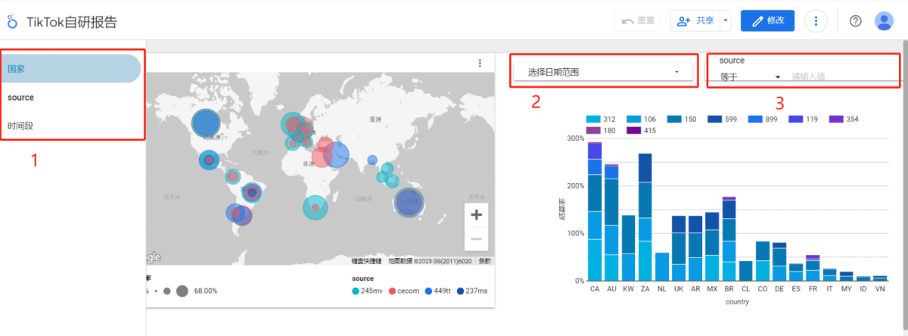
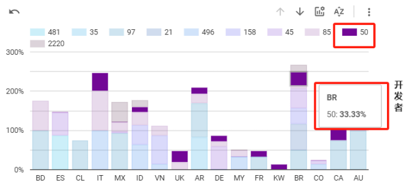
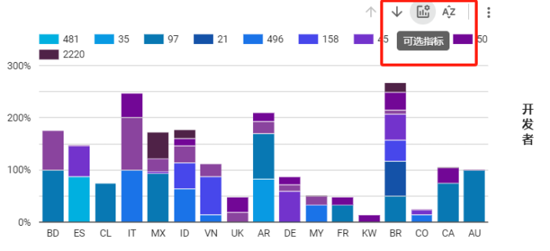
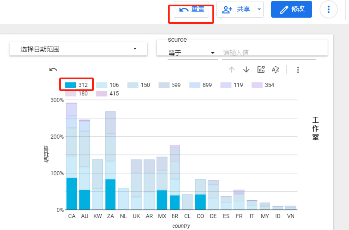
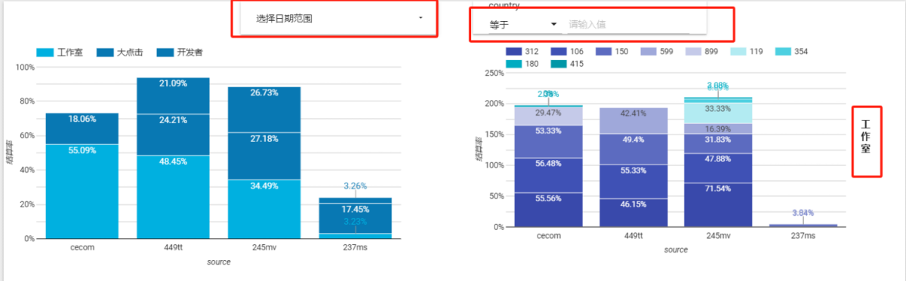
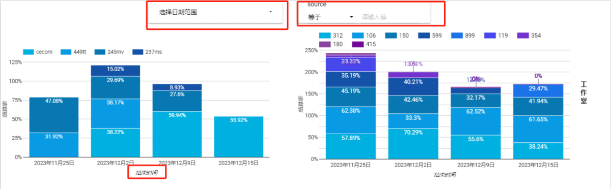

可视化网址：
注：以上网址需开vpn并在谷歌浏览器中打开
数据来源：Tiktok 日常自研核减报告自研报告 【腾讯文档】Tiktok 日常自研核减报告https://docs.qq.com/sheet/DR01wd3pRQ2FQQnNG?tab=i0bzgr

1. 可选择详情页。目前更新三页报告，第一页主要从国家维度看不同source和渠道的结算率，第二页主要从source维度看不同国家和渠道的结算率。第三页主要看不同时间段里各渠道结算率的变动情况。
2. 可选择日期。注：因功能限制，此处日期以统计时间段的开始日期为主。如12.11-12.15时间段，则显示的是12.11的数据，若包含重复时段的数据，以开始时间为准。
3. 可选择source。注：因功能限制，此处筛选必须按照规定source名称，大小写需一致。目前为：245mv，cecom，449tt，237ms。

以渠道50为例。点击图例处渠道，全局所有图表会同时变动为所选渠道。鼠标悬停至表上，可出现该国家对应结算率。

在图表右上角处可选择指标，目前有结算率和次留率可选择。

在看完所需数据内容后，可点击右上角“重置”，页面将刷新为最开始样式。

第二页是不同source对应不同类型渠道的结算率和次留率情况展示。功能同之前一样，并在右侧标出渠道类型。
注：因功能限制，此处筛选国家时必须全部大写。

第三页是不同时间段对应渠道结算率变动，此页依旧为结算率和次留率双指标，可自行选择。
注：因功能限制，无法在图表中合理显示为时间段，故仅保留结束时间最为时间段的指示。如实际时间段为12.11-12.15，在表中仅为12.15日，可与前一日期对比得出具体时间段。